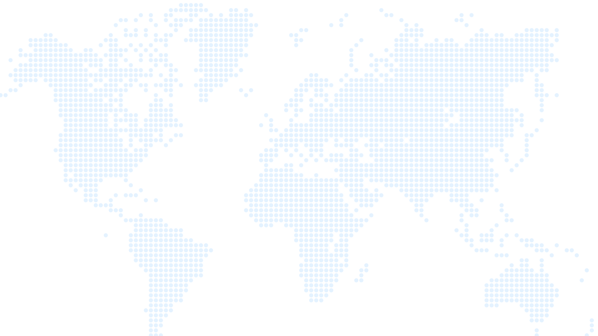

Portfólio de projetos
industriais da ZPE Maranhão
Quatro empreendimentos âncora que transformam Bacabeira em polo industrial de exportação: energia limpa, siderurgia verde e biocombustíveis.
Complexo industrial integrado para produção de ferro-esponja briquetado a quente (HBI, Hot Briquetted Iron), insumo estratégico para a siderurgia de baixo carbono voltado à exportação.
Refinaria modular voltada à produção de combustível de aviação sustentável (SAF) e derivados de petróleo para os mercados marítimo e rodoviário, com foco em exportação.
Biotech
Biorrefinaria de etanol de segunda geração (E2G) que converte biomassa em combustível renovável e coprodutos químicos de alto valor para o mercado global.
Planta de produção de e-metanol e hidrogênio verde (H₂V), combustíveis sintéticos de baixo carbono para descarbonizar a indústria e o transporte marítimo internacional.
O que estes investimentos
constroem para o Maranhão
A formalização destes quatro projetos impulsiona o PIB estadual, expande as exportações e consolida um novo polo industrial de energias limpas em Bacabeira.